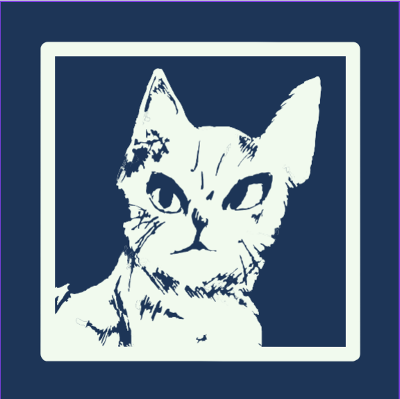

CDKK Network
Initializing community services...
Starting boot sequence...
0%
Mounting file index
Connecting forum services
Loading downloads metadata
Preparing homepage widgets
Syncing retro theme assets